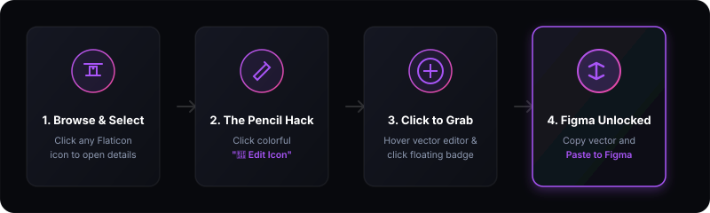

Architecture Overview
FlatGrabber is designed on a modular, local-first extension architecture running inside Google Chrome's Manifest V3 ecosystem. Unlike traditional graphics grabbers that use slow server-side scraping pipelines, FlatGrabber operates completely inside the active document frame, intercepting rendering variables in real time.
System Data Flow
The visual diagram below outlines the core pipelines connecting the Flaticon DOM context, FlatGrabber's scraper mechanisms, the clipboard buffer layers, and Figma's native vector engine:

By bypassing heavy graphic network loads, the extension maintains instant processing time (typically under 4 milliseconds), ensuring that design systems populate without browser delay or CPU spikes.
DOM Interception Engine
Flaticon uses aggressive inline listeners to intercept mouse events and redirect users to paid subscriptions or detail cards. To bypass this, FlatGrabber hooks into the event cycle at the Capture Phase rather than the standard bubbling phase.
Code Implementation: Click Hijack
By specifying { capture: true } on our custom UI components, we hook the browser engine before native website listeners can detect the interaction:
Canvas Extraction Loop
When the user launches the editor, FlatGrabber traverses the internal Canvas DOM layers recursively. It isolates coordinate nodes, strips watermarks, verifies layer dimensions, and packages clean vector structures into memory.
Figma Clipboard Bridge
Standard clipboard copy parameters serialize content as pure plain text (text/plain). If you copy an SVG string as text, Figma's canvas importer will render it on screen as a literal code string text block.
The MIME-Type Hack
To trick Figma's engine into translating the XML data as solid vector coordinate layers, FlatGrabber wraps the SVG XML string within a custom HTML template and injects it into the system buffer using the text/html MIME-type:
When this HTML wrapper enters Figma's window focus, its native clipboard listener parses the structural spans, extracts the inner child SVG coordinate nodes, and spawns the paths as fully editable vector groups.
Hotkeys Reference
Speed is critical for populating massive design libraries. FlatGrabber features a dedicated listener loop mapping active key states when the extension's panel sidebar is open. This enables pure keyboard control of all core utilities.
| Shortcut Key | Mapped Event Action | Technical Description |
|---|---|---|
| I | Toggle Inspector Mode | Launches high-fidelity DOM element highlighter. Hover and click any coordinate vector on the screen to grab instantly. |
| C | Copy SVG to Clipboard | Triggers the Figma clipboard bridge to format active paths and copy them to system memory. |
| S | Save to Collection | Saves the currently grabbed icon asset into local extension library storage index. |
| Esc | Close Panel | Hides FlatGrabber panel and returns user focus to Flaticon web frame. |
Recoloring Processing
FlatGrabber recolors icons dynamically without altering the original coordinate shapes. Rather than using simple regex string replacement (which risks corrupting vector metadata tags), FlatGrabber instantiates a virtual DOM environment using the browser's native DOMParser.
Code Implementation: Virtual DOM Recoloring
The parser compiles the raw string into a structured XML tree, traverses individual vector path layers, replaces color fill properties, and re-serializes the vector to string:
This process guarantees that vector coordinates remain mathematically untouched, ensuring 100% correct curve rendering inside Figma.